Pop up!
Ciało Czuje - Strefa Masażu Martyna Liżewska
Ciało Czuje to strefa masażu, gdzie masaż odpowiada na Twoje potrzeby.
Miejsce, w którym poprzez masaż holistyczny zapraszam Cię do wsłuchania się w swoje Ciało.
Miejsce, gdzie z uważnością spotkasz je w masażu.
Zajmuję się masażami holistycznymi, relaksacyjnymi, rozluźniającymi napięcia mięśniowe spowodowane stresem lub przeciążeniem fizycznym. U mnie znajdziesz:
- Spokój
- Balans
- Energię
- Luz w mięśniach
- Indywidualne podejście do Twoich problemów
Czego możesz oczekiwać?
- całkowitego zaopiekowania
- masażu ciała na wysokim poziomie
- masażu holistycznego indywidualnie dobranego do Twoich potrzeb
- rozmowy przed rozpoczęciem masażu ciała
- ciepłej herbaty
- dobrej, przyjaznej i domowej atmosfery w strefie masażu
To, co chcę Tobie zaproponować, to nie tylko masaż ciała. To czas tylko dla Ciebie, Twój czas ze sobą. To zwiększanie świadomości ciała poprzez masaż holistyczny. Przy tym dobra i bezpieczna atmosfera, w której możesz odpuścić wszelkie troski dnia codziennego, wyjść zregenerowanym, pełnym energii, totalnie rozluźnionym.
Lokalizacja również nie jest przypadkowa. Kołobrzeska 13 jest świetnym miejscem na masaż w Olsztynie. Przy lokalu znajduje się duży bezpłatny parking, jest to też dobrze skomunikowane miejsce transportem miejskim. W okolicy dworzec, sklepy, inne punkty usługowe.
W lokalu, gdzie przyjmuję, znajdziecie również IQ Beauty czyli zabiegi na twarz, makijaż oraz stylizację paznokci, a więc coś dla kobiet, które poszukują zadbania o siebie od stóp do głów w jednym miejscu.
Masaż holistyczny
Jest to podejście do masażu ciała, które uwzględnia całość człowieka: fizyczne, emocjonalne, psychiczne i duchowe aspekty. Koncentruje się na równowadze i harmonii między ciałem umysłem i duchem, stosując różnorodne techniki masażu ciała w celu promowania ogólnego dobrego samopoczucia i zdrowia.
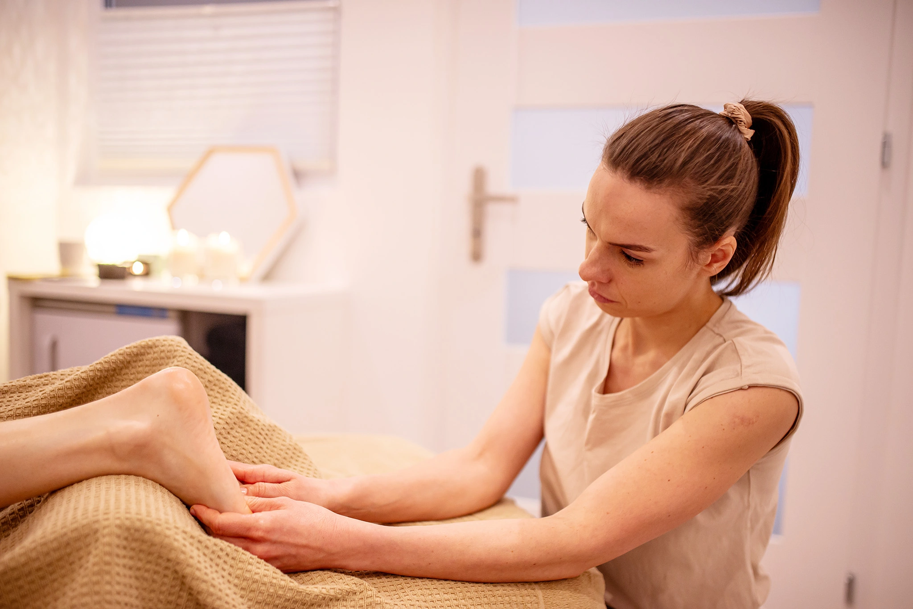
Jak się przygotować do masażu ciała?
- Nie jedz obfitego posiłku przed samym masażem ciała
- Najlepiej zjeść coś lekkiego około 2 godziny przed masażem ciała
- Ubierz się wygodnie, aby łatwo Ci się było ubrać gdy będziesz mieć naolejowane ciało po masażu holistycznym
- Jeśli czujesz potrzebę odświeżenia się przed masażem ciała, zrób to w domu. W mojej strefie masażu nie ma prysznica
- Zastanów się czego Ci potrzeba, gdzie czujesz największe napięcia, jaki cel chcesz osiągnąć po masażu ciała
- Jeśli borykasz się z problemami zdrowotnymi, zabierz najświeższe wyniki badań obrazowych, aby wykluczyć przeciwwskazania do masażu ciała lub dobrać odpowiednie techniki masażu holistycznego
Jak umówić się na masaż?
Najlepiej pisząc SMS lub wiadomość na what up/ instagram/ facebook.
Nie odbieram telefonów podczas masażu. Odpisuję, oddzwaniam najszybciej jak to możliwe.
Vouchery
W mojej strefie masażu jest możliwość wykupienia vouchera, zapakowanego w ozdobną kopertę, gotowego do wręczenia lub w formie elektronicznej przesłanej mailowo.
Obowiązują je takie same ceny i promocje jak w przypadku innych masaży holistycznych z oferty.
Voucher ważny jest przez 3 miesiące od daty zakupu.
Na jakich produktach pracuję?
Wybieram tylko te naturalne, z prostym składem. Ważne jest też dla mnie korzystanie z polskich marek.
Aktualnie do masażu ciała stosuje czysty olej migdałowy, w którym rozpuszczam skoncentrowane oleje eteryczne wysokiej jakości, tak aby poprzez aromaterapię działać nie tylko na zmysł węchu, ale i nieść szereg korzyści wynikających z działania danego olejku, dobranego również indywidualnie do Twoich potrzeb, co świetnie wpisuje się w ideę masażu holistycznego.
Strefa masażu Martyna Liżewska
O MNIE

Mam na imię Martyna, praca z Ciałem to moja pasja. Z tego powodu zdecydowałam się na studia na kierunku Fizjoterapia. Po nich zajęłam się pracą typowo kliniczną, leczniczą. Pracowałam w centrum medyczno-rehabilitacyjnym oraz zakładzie opiekuńczo-leczniczym. Zmęczyło mnie jednak ograniczenie czasowe i brak narzędzi aby w pełni móc pomagać. Przez przypadek (lub i nie, bo przecież przypadków nie ma) trafiłam do Art SPA w Zamku Topacz pod Wrocławiem, gdzie masaż był czymś więcej niż pracą manualną na poziomie mięśni. Moje serducho od razu poczuło ten klimat i zakochałam się w takiej formie pracy z ciałem człowieka. Od tamtej pory rozwijam się w tym kierunku, bo widzę jak ogromny potencjał ma odpoczynek połączony z odpowiednią pracą na tkankach. Jak bardzo to, co dzieje się w ciele, połączone jest z emocjami. Dużo lepsze efekty można uzyskać łącząc rozluźnienie nie tylko mięśni, ale i „ducha”. Swoje doświadczenie przenoszę i rozwijam również w Camp Spa Włodowo. Całość podkręcam przez nieustający rozwój, między innymi szkoleniami z: masażu balijskiego, tkanek głębokich, funkcyjnego, poprzecznego czy pracy ze stawem skroniowo-żuchwowym. W planie mam dużo więcej.
W zrozumieniu i poznaniu ludzkiego ciała pomogły mi nie tylko studia, które dały mi przede wszystkim wiedzę merytoryczną i solidne podstawy anatomii, ale również moja inna pasja - taniec. Tańczyłam od zawsze, różne style. Na dłużej zatrzymał mnie taniec współczesny i teatr tańca. Teraz łączę wiedzę, pasję i podejście do człowieka z szacunkiem na jaki zasługuje.
Zapraszam do obserwowania mojego profilu na Facebooku. Znajdziecie tam treści nie tylko dotyczące moich usług. Będę też dzielić się wiedzą z zakresu szeroko pojętego zdrowia, dbania o siebie i psychosomatyki, czyli emocji i ich wpływie na nasze ciała.
Strefa masażu Martyna Liżewska
ZDJĘCIA
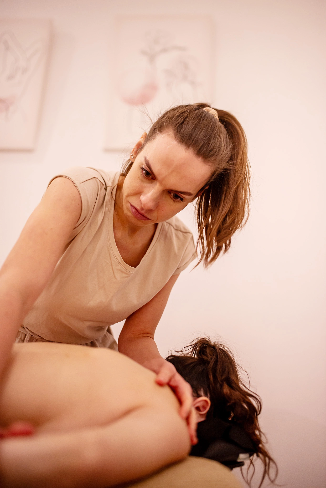
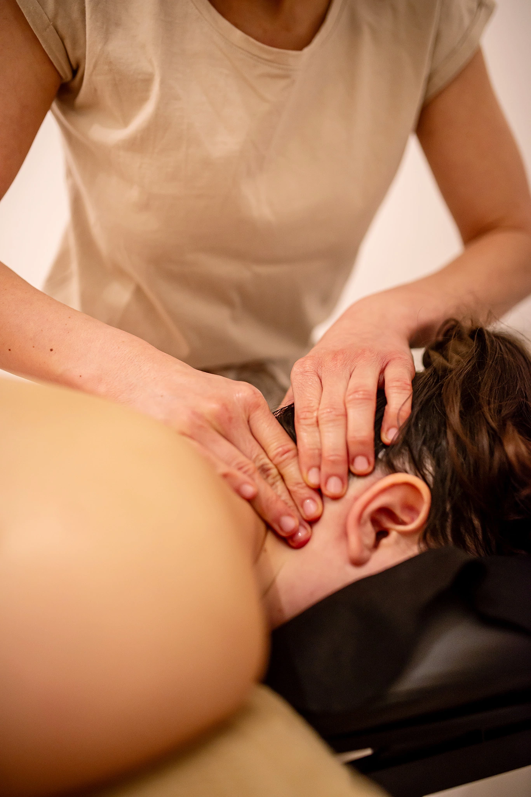
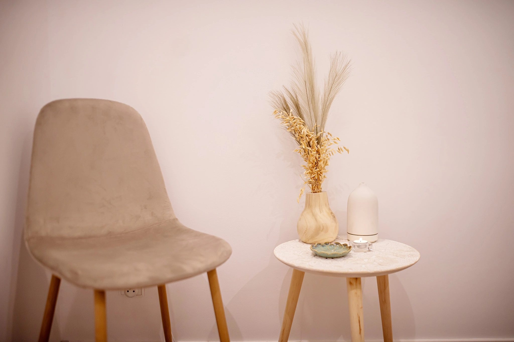
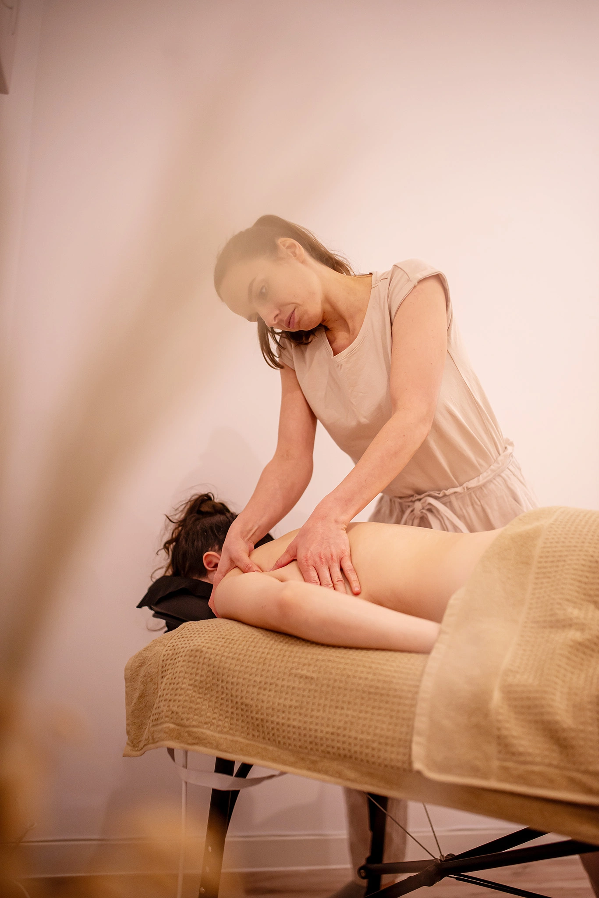
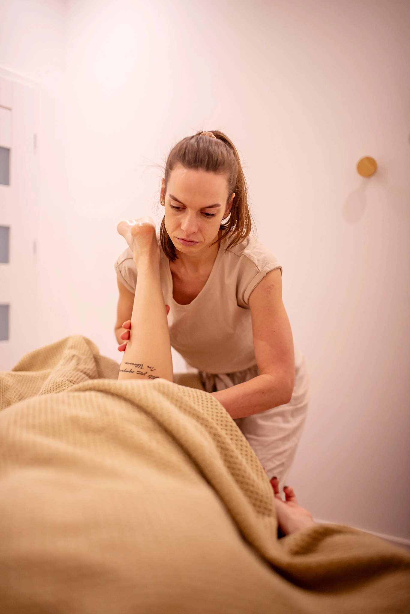
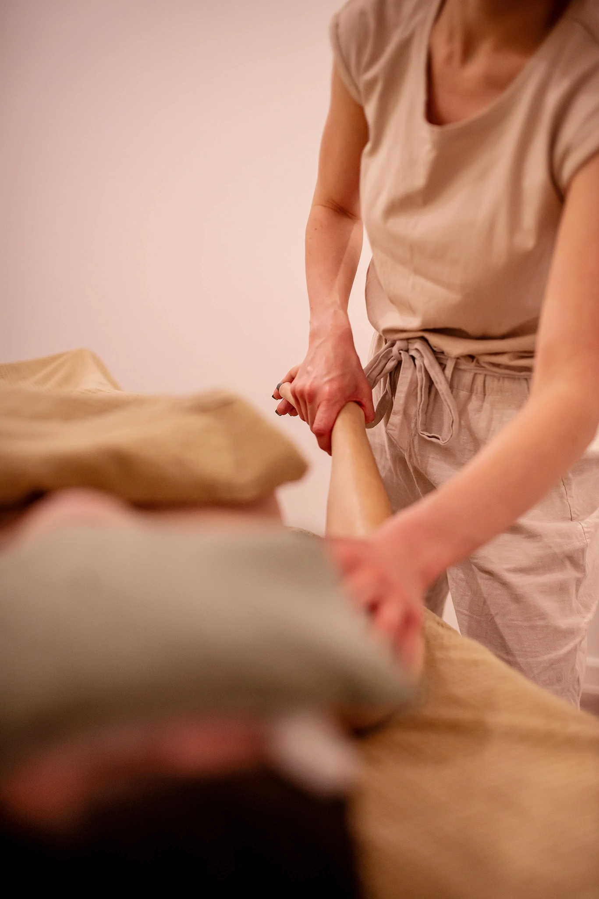
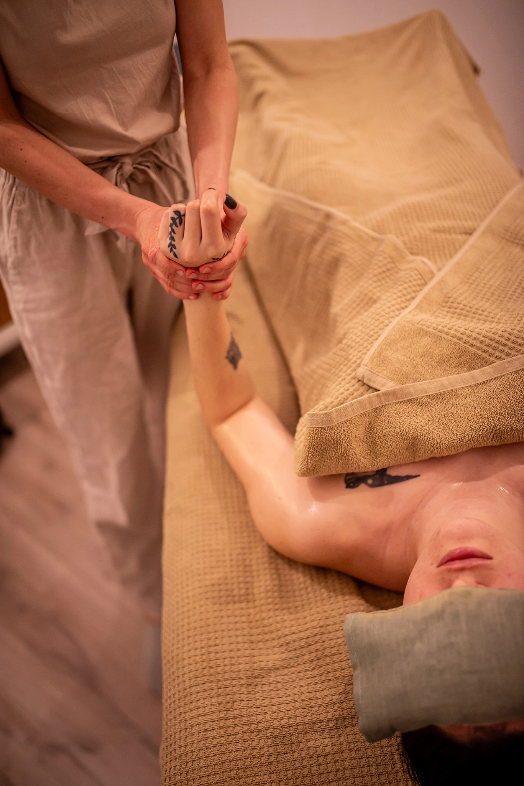
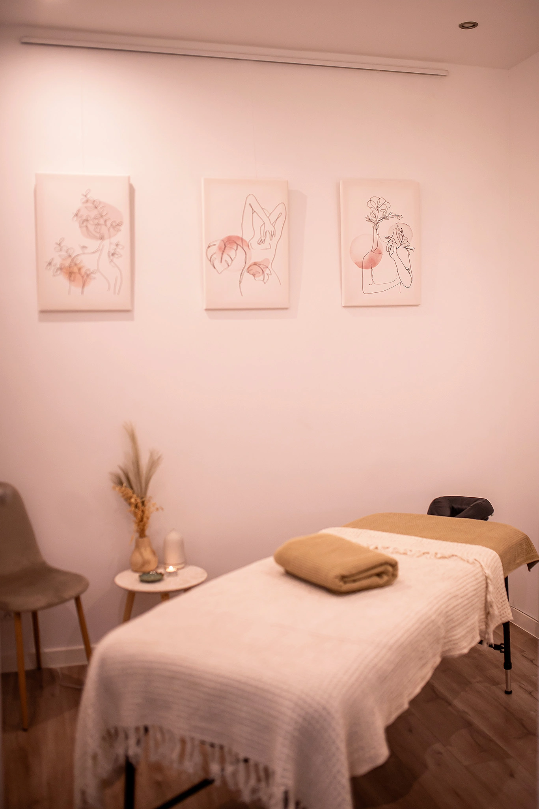
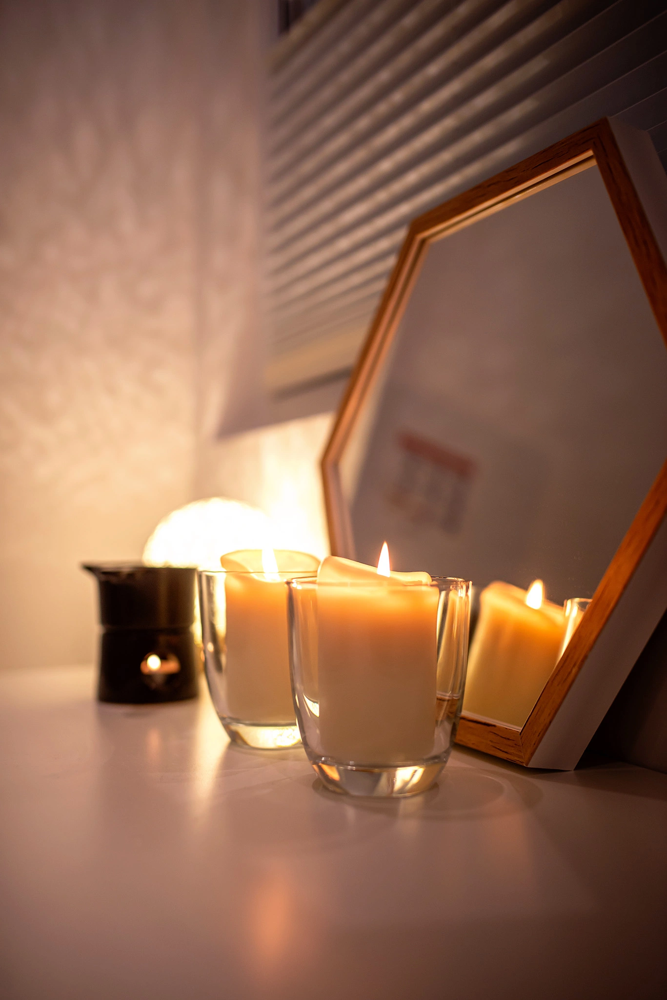
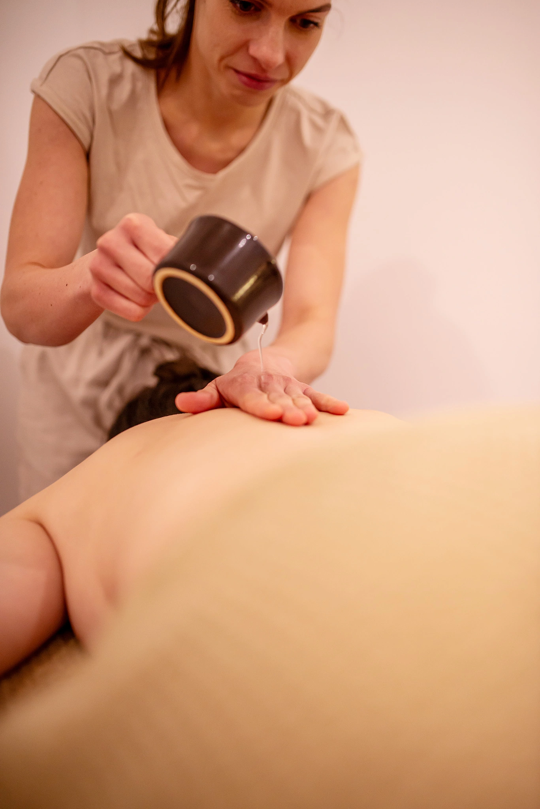
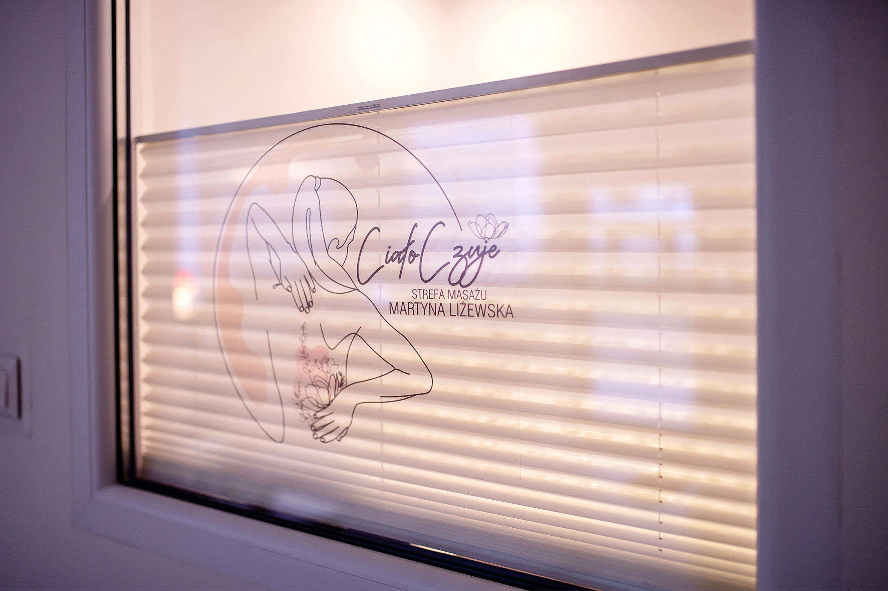
Strefa masażu Martyna Liżewska
MASAŻE
Spokój
Najbardziej klasyczny masaż relaksacyjny. Wybierz go, jeśli czujesz przebodźcowanie, masz dużo stresu, potrzebujesz wyciszyć się i ukoić układ nerwowy. Bazuje na długich i spokojnych ruchach, połączony z masażem głowy.
60, 75, 90 min
Balans
Ten masaż sprawdzi się gdy czujesz,,niewygodę" w ciele, odczuwasz brak równowagi na poziomie ciała lub emocji. Inspirowany technikami orientalnymi, obejmuje całe ciało wraz z głową i twarzą.
90 min
Energia
Potrzebujesz doładować baterie? To masaż dla Ciebie. Pobudzi Twoje krążenie, przemianę materii, doda energii i chęci do działania. Jest dynamiczny, z dużą ilością rozcierania i ruchów naprzemiennych. Najbardziej sprawdzi się w pierwszej części dnia.
60, 75, 90 min
Luz w mięśniach
Masaż, który skupia się przede wszystkim na Twoich mięśniach. Uwalnia z nich napięcie i zmęczenie nagromadzone w wyniku stresu lub obciążenia fizycznego.
30, 60, 75, 90 min
Szyty na miarę
Masaż, w którym słuchając Ciebie, Twoich potrzeb oraz Twojego ciała dobierane są odpowiednie techniki i narzędzia, aby uzyskać oczekiwany efekt. Będzie to wyjątkowa kompozycja stworzona dla Ciebie.
30, 60, 75, 90 min
Lomi lomi nui
Lomi lomi nui to coś więcej niż masaż relaksacyjny. Jest to piękny rytuał hawajskiego masażu. Według Hawajczyków wszelkie dolegliwości wynikają z napięć powstałych na skutek stresu, a najskuteczniej można je uwolnić poprzez pełen szacunku, świadomy dotyk.
90, 120 min
Strefa masażu Martyna Liżewska
CENNIK
Spokój
60
minut
170 zł
75
minut
210 zł
90
minut
240 zł
Balans
90
minut
240 zł
Energia
60
minut
170 zł
75
minut
210 zł
90
minut
240 zł
Luz w mięśniach
30
minut
120 zł
60
minut
170 zł
75
minut
210 zł
90
minut
240 zł
Szyty na miarę
30
minut
120 zł
60
minut
170 zł
75
minut
210 zł
90
minut
240 zł
Lomi lomi nui
90
minut
290 zł
120
minut
380 zł
Strefa masażu Martyna Liżewska
KONTAKT
+48 502 033 227
ul. Kołobrzeska 13, Olsztyn
cialoczuje@gmail.com